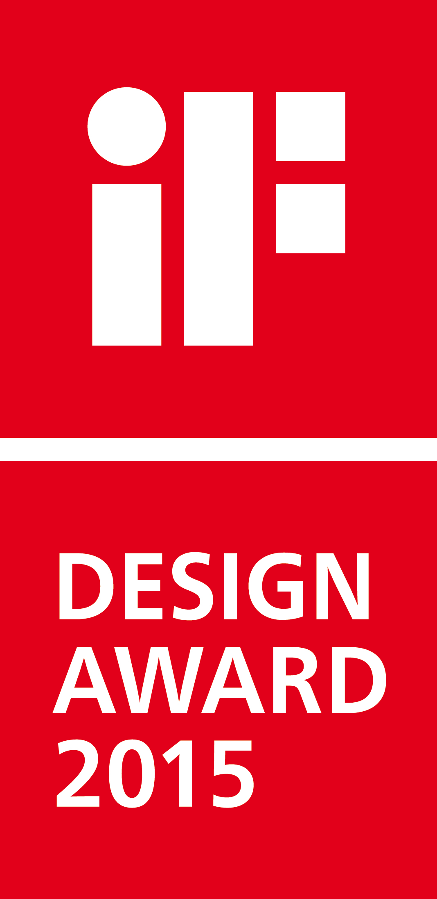
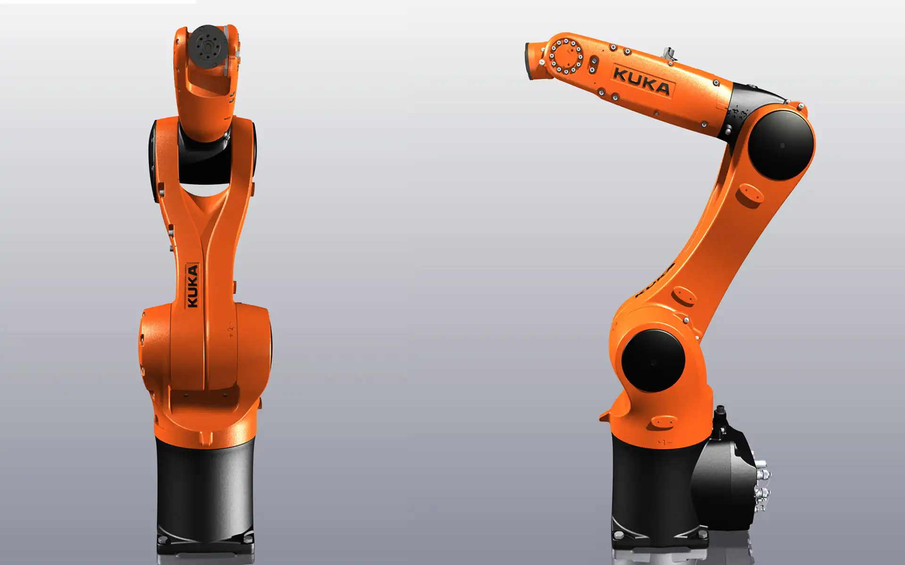
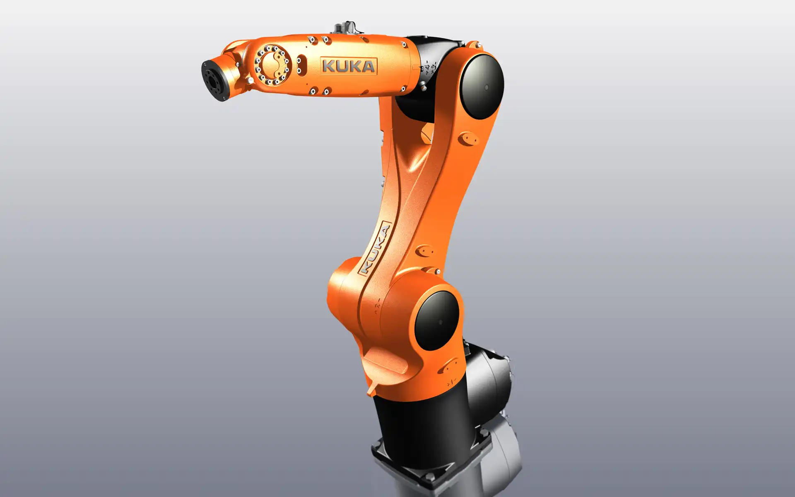
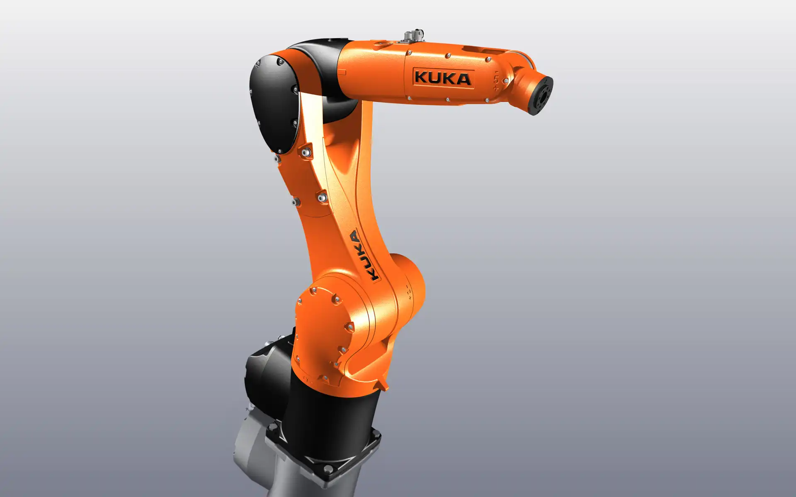

KUKA KR 6 Agilus
Small Size Robot
KUKA KR 6 Agilus
Kleinrobotik
The KR AGILUS is a compact six-axis robot that is designed for the highest working speeds.
It impresses with its versatility, which enables new fields of application, for example in the medical
sector. But also high speed handling tasks in the industry with minimal cycle times at the highest
precision, particularly pick and place, are the main qualities of the robot.
The design is characterized by the dynamic appearance of the robot. It emphasizes the light-footed
appearance, the spontaneous change of direction and the self-understanding of the movements. No gram of
material was wasted which the agility of the machine could have impaired. The corpus was trimmed to
achieve pure performance. The robot has very slim contours, as the energy supply is integrated inside,
including pneumatic tubes for different kinds of applications. With the ability to reach points near the
base of the robot, as well as in the overhead, the KR AGILUS offers an optimal workspace. This makes
space-saving, economic cell concepts possible. It has a maximum payload of 6 kg and a range of 901 mm,
its repeatability is 0,03 mm.
Selić Industriedesign service: Design concept, design consultation, design sketches, CAD design support,
CAD freeform modeling, design refinement, processing of design data for the engineering department
Der KR AGILUS ist ein kompakter Sechsachs-Roboter, der auf höchste Arbeitsgeschwindigkeiten ausgelegt
ist.
Er besticht durch seine Vielseitigkeit, die neuartige Einsatzbereiche ermöglicht, beispielsweise in der
Medizinbranche. Aber auch High-Speed-Handhabungsaufgaben in der Industrie mit minimalen Zykluszeiten bei
höchster Präzision, insbesondere Pick and Place, sind seine Hauptstärken.
Das Design ist vom dynamischen Auftreten des Roboters geprägt. Es betont die Leichtfüßigkeit, die
spontanen Richtungswechsel und das Selbstverständnis der Bewegungsabläufe. Es wurde kein Gramm Material
verschwendet, das die Agilität der Maschine hätte beeinträchtigen können. Der Korpus wurde auf pure
Leistung getrimmt. Um die sehr schlanken Konturen wahren zu können, trägt der Roboter seine gesamte
Energieversorgung integriert im Inneren, inklusive Druckluftleitungen für die verschiedenen
Anwendungen. Geringer Platzbedarf und wahlweiser Einbau in Boden- und Deckenlage machen den KR AGILUS
extrem anpassungsfähig. Mit der Fähigkeit, Punkte sowohl nahe der Roboter-Basis als auch im
Überkopfbereich zu erreichen, bietet der KR AGILUS einen optimalen Arbeitsraum. Das ermöglicht
platzsparende, wirtschaftliche Zellenkonzepte.
Selić Industriedesign Dienstleistung: Designkonzept, Designberatung, Designentwürfe, CAD-Design
Unterstützung, CAD-Freiform-Modellierung und Detailgestaltung, Aufbereitung von Designdaten für die
Konstruktion



Images © Selić Industriedesign
Video materials © KUKA Roboter GmbH